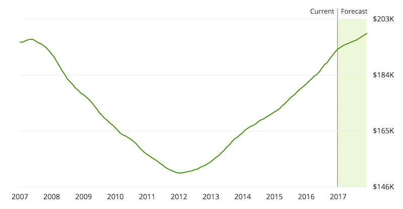

Feature Engineering
Indicator Variables
Before creating Machine Learning models we wanted to highlight indicator variables.
First we created an indicator variable to flag properties with 2 bedrooms and 2 bathrooms and name it 'two_and_two'. Because 2 bedrooms and 2 bathrooms are especially popular for investors.
Maybe these types of properties command premium prices. We found out almost 9.5% of the observations in our dataset were for properties with 2 beds and 2 baths.
People might also not take much interest in old properties.
Almost 38% of the observations in our dataset were for properties which build before 1980.
According to data from Zillow, the lowest housing prices were from 2010 to end of 2013 (country-wide).

So, we created a new feature called 'during_recession' to indicate if a transaction falls between 2010 and 2013.